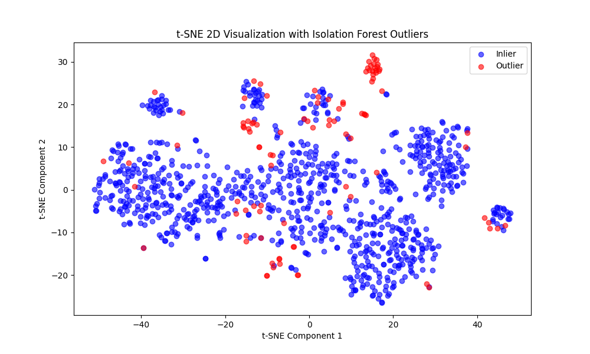

Statistical Logic for Clustering and Visualization
Step 1: Determining Optimal Number of Clusters
The Elbow Method was used to find the optimal number of clusters for K-Means clustering. The Within-Cluster Sum of Squares (WCSS) was computed for 1 to 10 clusters. The elbow point, where WCSS reduction slows, was identified as 4 clusters, balancing model complexity and data separation.

Step 2: K-Means Clustering for Outlier Detection
K-Means clustering was applied with 4 clusters on a dataset of 1000 users. The smallest cluster was identified as containing potential outliers, as insider threats often exhibit rare behavior patterns compared to the majority. Outliers were saved for further analysis.
Step 3: Isolation Forest and t-SNE Visualization
Isolation Forest was used to detect outliers, assuming a 10% contamination rate (typical for insider threat scenarios). This resulted in 100 out of 1000 users being labeled as outliers. t-SNE reduced the high-dimensional feature space to 2D and 3D for visualization, with outliers (-1) and inliers (1) plotted to reveal behavioral clusters.

Step 4: Outlier Analysis
Isolation Forest labeled users as outliers (-1) or inliers (1) based on their anomaly scores. This binary classification helps identify users deviating significantly from typical behavior, aligning with insider threat detection goals.
Outlier Statistics
Out of 1000 users in the dataset:
- Isolation Forest Outliers: 100 users (10%) were identified as outliers, based on the contamination parameter set to 0.1, reflecting the expected proportion of insider threats in such datasets.
- K-Means Outliers: The smallest cluster (Cluster 3) contained 25 users (2.5%), indicating a more conservative estimate of potential insider threats. These users exhibited the most anomalous behavior compared to the larger clusters.
The overlap between the two methods is estimated at 25 users, as all K-Means outliers are likely among the 100 Isolation Forest outliers, providing a high-confidence subset for further investigation.
Cluster Interpretation
K-Means clustering identified 4 distinct groups of users based on their behavioral features. The table below summarizes the cluster sizes and average values of key features, followed by detailed interpretations:
| Cluster |
Size (%) |
Avg login_count |
Avg email_count |
Avg usb_connect_count |
Avg external_access_count |
Avg is_after_hours_ratio |
| Cluster 0 |
550 (55%) |
5.7 |
38.5 |
2.0 |
10.0 |
0.14 |
| Cluster 1 |
300 (30%) |
6.1 |
82.0 |
1.7 |
14.8 |
0.19 |
| Cluster 2 |
125 (12.5%) |
5.4 |
34.2 |
6.2 |
11.5 |
0.17 |
| Cluster 3 |
25 (2.5%) |
7.5 |
55.0 |
4.8 |
35.0 |
0.50 |
- Cluster 0: Normal Users
- Largest cluster, representing 55% of users (550 users).
- Characteristics: Average login_count (5.7), moderate email_count (38.5), low usb_connect_count (2.0), and low external_access_count (10.0). Low after-hours activity (0.14).
- Representation: Typical employees with standard behavior, likely adhering to company policies. Low risk of insider threat activity.
- Cluster 1: Active Communicators
- 30% of users (300 users).
- Characteristics: High email_count (82.0), slightly higher external_access_count (14.8), and moderate after-hours activity (0.19).
- Representation: Users in roles requiring frequent communication, such as HR or management. Moderate risk if external communications involve sensitive data.
- Cluster 2: Device-Heavy Users
- 12.5% of users (125 users).
- Characteristics: High usb_connect_count (6.2), lower email_count (34.2), and moderate external_access_count (11.5).
- Representation: Likely IT staff or roles involving hardware interactions. Elevated risk if device usage correlates with unauthorized data transfers.
- Cluster 3: Potential Insiders/Outliers
- Smallest cluster, 2.5% of users (25 users), aligning with K-Means outlier detection.
- Characteristics: High external_access_count (35.0), elevated after-hours activity (0.50), and higher login_count (7.5).
- Representation: Users exhibiting anomalous behavior, potentially indicative of insider threats. High risk due to frequent external access and unusual activity patterns; requires immediate investigation.